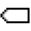

 Tunnel
| Librairie: | Câblage |
| Introduction: | 2.5.0 (dans la librairie de base, déplacé dans le la librairie câblage en 2.7.0) |
| Apparence: |

|
Comportement
Un tunnel
se comporte comme un câble dans le sens qu’il relie des points d'un circuit ensemble, mais contrairement à un câble, la connexion n’est pas explicitement dessinée. L'utilité se démontre lorsque vous devez connecter des points éloignés dans le circuit et qu'un réseau de câbles surchargerait le schéma de manière exagéré. Il ne permet pas des connexions entre plusieurs schémas de circuit.

L'illustration ci-dessus montre comment cela fonctionne. Ici, trois tunnels ont le même label, Clk_A, et représentent les trois points auxquels les tunnels sont connectés. Si l'un des tunnels porte un label différent, comme R_W, alors il ferait partie d'un ensemble de tunnels différent.
Dans l'exemple suivant, on peut observer l'apparition d'une erreur à l'activation du buffer contrôlé en conflit avec la broche du bas.
Pins
Un tunnel n’a qu’une seule broche dont la largeur de bit correspond à l’attribut Largeur données du tunnel. Ce composant n'est ni une entrée ni une sortie. Les tunnels de même label sont simplement interconnectés de manière transparente comme des fils.
Attributs
Lorsque le composant est sélectionné ou ajouté, Alt-0 à Alt-9 modifie son attribut Largeur données et les touches fléchées modifient son attribut Orientation .
- Orientation
- La direction vers laquelle pointe le tunnel.
- Largeur données
- La largeur en bits du tunnel.
- Label
- Le texte dans l’étiquette associée au tunnel. Ce tunnel est connecté à tous les autres tunnels avec exactement le même libellé.
- Police du Label
- La police avec laquelle rendre l'étiquette.
Comportement de l'outil pousser
Aucun.
Comportement de l'outil text
Permets de modifier l’étiquette associée au tunnel.
Retour à Référence de la bibliothèque